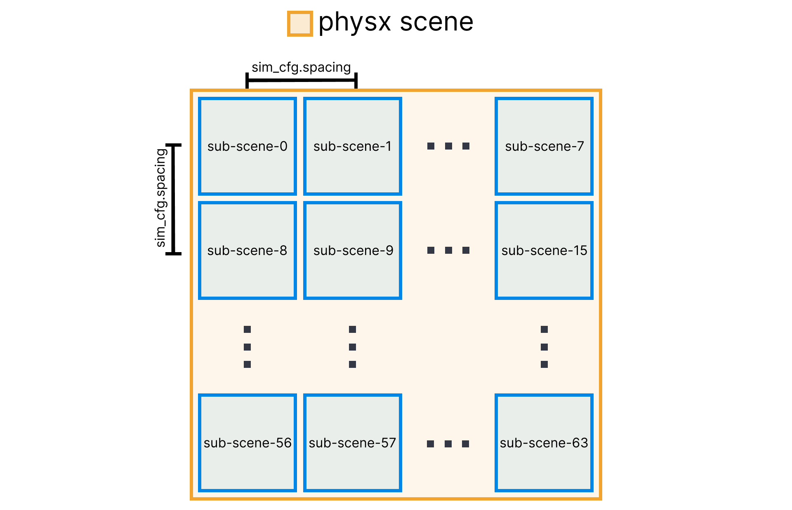
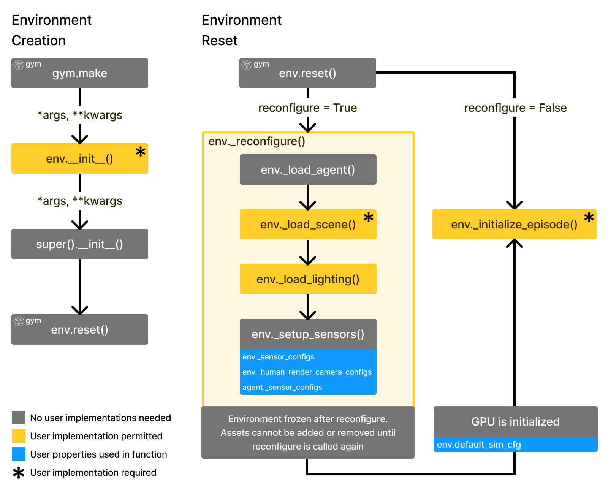
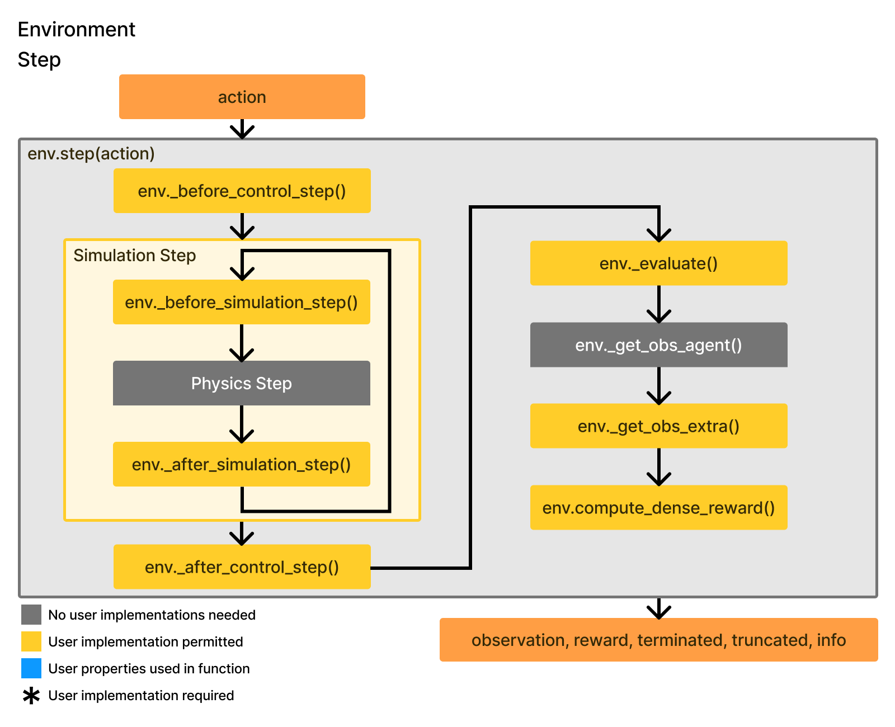
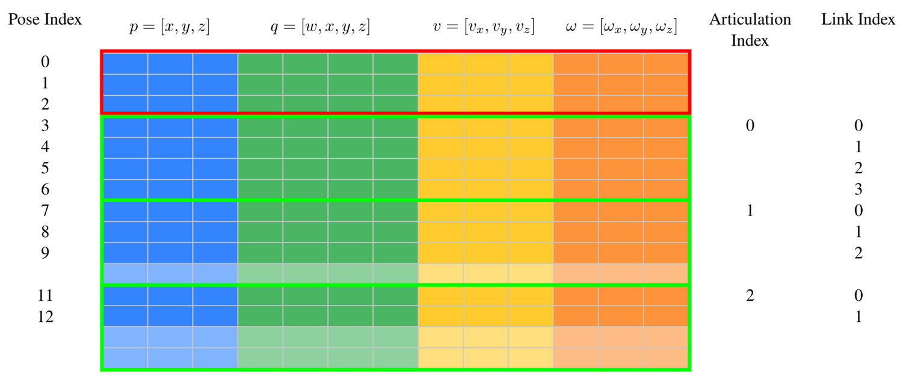
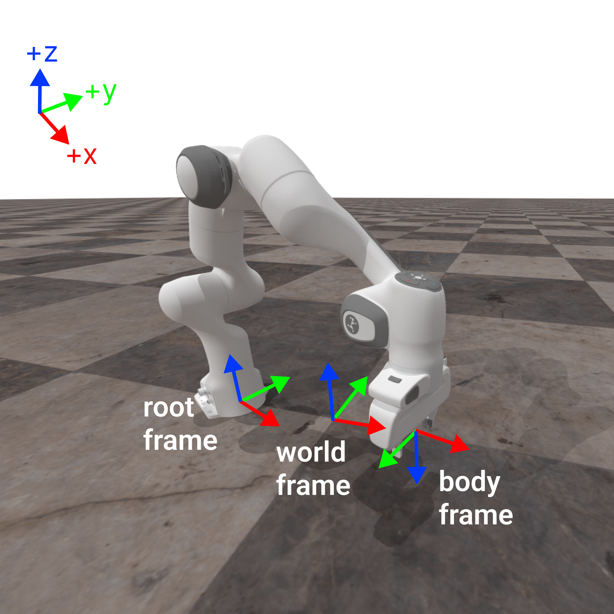

Maniskill学习（Maniskill Learning）
1. 机器人与环境 (Robot & Environment)
位姿 (Pose):
定义物体在 3D 空间中的位置和方向。
组成: 3D 位置 (Position) + 4D 四元数 (Quaternion)。
注意: ManiSkill/SAPIEN 中的四元数格式为
wxyz(实部在前)。
对象分类:
- ManiSkill/SAPIEN 中的对象主要分为两类：Actor (刚体) 和 Articulation (关节体)。
Actors (单体对象)
通常指受力后整体移动、不发生形变的“单一”物体。
属性:
pose: 3D 空间位置 (单位: 米)。linear velocity: 线速度 (x, y, z, 单位: m/s)。angular velocity: 角速度 (x, y, z, 单位: rad/s)。
三种类型:
Dynamic (动态): 完全物理模拟。受力会像真实世界一样反应。
Kinematic (运动学): 部分物理模拟。受力不会移动或变形，但与 Dynamic 物体碰撞时，Dynamic 物体会受到反作用力。比 Dynamic 节省资源。
Static (静态): 与 Kinematic 物理特性相同，但不能在加载后改变位姿。最节省 CPU/GPU 内存。
Articulations (关节体)
由 Links (连杆) 和 Joints (关节) 组成。
任意两个 Link 由一个 Joint 连接。
通常通过 URDF/XML 树状结构定义。
关节类型: Fixed (固定), Revolute (旋转), Prismatic (平移)。
模拟生命周期
Reconfiguration (重构): 加载所有对象。
Initialization (初始化): 设置所有对象的 Pose 和初始状态。
Simulation (模拟): 开始物理步进。
2. GPU 模拟原理 (GPU Simulation)
ManiSkill 通过 GPU 并行化实现单卡同时模拟数千个任务。
Sub-scenes (子场景):
所有 Actor 和 Articulation 都在同一个 PhysX 大场景中。
每个任务被分配到一个小的 子场景 (Sub-scene) 工作区。
数据读取时会自动处理坐标，使其相对于子场景中心，而非 PhysX 场景原点。
注意: 如果物体跑出子场景范围，可能会干扰其他子场景（虽然 ManiSkill 会自动设置合适的间距
sim_config.spacing）。

核心流程
env.reset 流程
Reconfiguration: 加载对象（Actor/Articulation/Light）到场景，仅生成，不做其他操作。
physx_system.gpu_init(): 初始化 GPU 显存缓冲区和渲染组。Initialize: 设置所有对象的初始 Pose、qpos (关节位置) 等。
physx_system.gpu_apply_*: 将初始数据写入 GPU 缓冲区。physx_system.gpu_update_articulation_kinematics(): 更新关节运动学数据。physx_system.gpu_fetch_*: 从 GPU 获取数据生成 Observation。- *代码中
physx_system通常对应 **env.scene.px*
- *代码中

env.step 流程
获取用户 Action（可能包含裁剪）。
将 Action 转换为目标关节位置/速度控制信号。
运行
gpu_apply_articulation_target_*应用控制目标。运行
physx_system.step()多次进行物理步进。运行
gpu_fetch_*更新 GPU 缓冲区并生成 Observation。返回
step数据 (obs, reward, terminated, truncated, info)。

GPU 数据组织
所有刚体数据 (Pose 7D, Linear Vel 3D, Angular Vel 3D) 在 GPU 中被紧密打包成一个大矩阵
physx_system.cuda_rigid_body_data。权衡: 这种内存布局为了性能牺牲了直观性（不保证每 K 行对应一个子场景）。如果你直接操作 GPU buffer 需要注意，使用 API 则无需关心。

3. 控制 (Control)
底层控制均为关节位置 (Position) 或关节速度 (Velocity)。
控制器类型 (Controllers)
Passive (被动控制)
PassiveControllerConfig强制关节不受 Action 控制（例如 CartPole 的杆连接处）。
PD Joint Position (PD 关节位置)
PDJointPosControllerConfig通过 PD 控制器直接控制关节角度/位置。
PD EE Pose (末端执行器位姿)
PDEEPoseControllerConfig通过逆运动学 (IK) 控制末端 (End-Effector) 或任意 Link 的位姿。
特点: 解耦平移和旋转控制。
坐标系 (Frames):
World Frame (世界坐标)
Root Link Frame (机器人基座坐标)
End Effector / Body Frame (末端坐标)

- **控制模式**:
- **Delta Control \(增量控制\)**: 默认开启 \(`use_delta=True`\)。Action 代表相对移动量。
- **Non Delta Control**: 类似运动规划，Action 代表绝对目标位姿。
- **常见的 Frame 组合 \(Delta模式下\)**:
- `root_translation:root_aligned_body_rotation` \(默认\): 平移基于基座坐标，旋转基于基座对齐的本体坐标。
- `body_translation`: 平移基于末端坐标（例如“向前”是向抓手前方）。PD EE Pos (末端执行器位置)
PDEEPosControllerConfig与上面类似，但只控制位置 (3D)，没有旋转控制。
4. 观测 (Observation)
通过 gym.make(env_id, obs_mode=...)
设置。返回格式通常为字典。
观测模式 (Obs Modes)
关键数据格式
RGB:
[H, W, 3],uint8.Depth:
[H, W, 1],int16, 单位 毫米 (mm). 0 代表无效/无穷远。Segmentation:
[H, W, 1],int16. 对象 ID 掩码。
分割数据 (Segmentation)
每个对象加载时分配唯一的
per_scene_id。ID 0 通常指远处的背景。
查询代码:
1 | # 查看 ID 对应的对象名称 |
5. 相机与传感器 (Cameras & Sensors)
相机分类
Sensors: Agent 用于决策的观测相机。
Human Render: 供人类观看的高质量相机。
Viewer: GUI 界面使用的相机。
配置 (Configuration)
在 gym.make 中通过 sensor_configs
等参数覆盖默认设置：
1 | gym.make("PickCube-v1", |
*也可以指定特定相机名：
**dict(camera_0=dict(width=320...))*
着色器 (Shaders)
minimal: 最快，最小显存，背景全黑。
default: 速度与纹理的平衡。
rt / rt-med / rt-fast: 光线追踪 (Ray-tracing)，照片级真实感，速度依次递增，质量递减。
纹理 (Textures)
rgb: 颜色 (0-255).
depth: 深度 (mm).
position:
[x, y, z, seg_id].segmentation: 分割 ID.
normal: 法线向量.
albedo: 反照率颜色.
6. 复现性与随机数 (Reproducibility)
由于 GPU 并行和随机化，复现需要特定技巧。
方法 1: 使用 Batched RNG (推荐)
ManiSkill 推荐使用环境自带的
_batched_episode_rng，它是确定性的。
机制:
env.reset(seed=x)如果是单个整数
x: 第一个环境种子为x，其余环境基于x衍生随机种子。如果是列表
[x1, x2, ...]: 每个环境分别对应列表中的种子（完全可控）。
主要用于环境重构（加载哪些物体/纹理）。
方法 2: 环境状态 (Env State)
用于 Episode 初始化（物体位置、速度等）。
环境状态包含：关节角度、关节速度、Pose、速度。
不包含: 纹理、几何形状、固定相机位置（这些由 Seed 决定）。
复现流程: 使用相同的 Seed (保证物体一致) ->
env.reset()-> 加载并设置保存的 State (保证位置一致)。
自定义任务
Building a custom task in ManiSkill is comprised of the following core components
Loading (Robots, Assets, Sensors, etc.) (run once)
Episode initialization / Randomization (run every env.reset)
Success/Failure Condition (run every env.step)
Extra Observations (run every env.step)
(Optional) Dense Reward Function (run every env.step)
(Optional) Setting up cameras/sensors for observations and rendering/recording (run once)
Setting up the Task Class
All tasks are defined by their own class and must inherit BaseEnv,
similar to the design of many other robot learning simulation
frameworks. You must then also register the class with a decorator so
that the environment can be easily created via the
gym.make(env_id=...) command in the future. Environment
registration is done via
@register_env(env_id, max_episode_steps=...) where
max_episode_steps indicates the time limit of the task.
import sapienfrom mani_skill.utils import sapien_utils, commonfrom mani_skill.envs.sapien_env import BaseEnvfrom mani_skill.utils.registration import register_env@register_env("PushCube-v1", max_episode_steps=50)class PushCubeEnv(BaseEnv):def init(self, *args, **kwargs):super().init(*args, **kwargs)
Loading
At the start of any task, you must load in all objects (robots,
assets, articulations, lighting etc.) into each parallel environment,
also known as a sub-scene. This is also known as
reconfiguration and generally only ever occurs once.
Loading these objects is done in the _load_scene function
of your custom task class. The objective is to simply load objects in
with initial poses that ensure they don’t collide on the first step, and
nothing else. For GPU simulation at this stage you cannot change any
object states (like velocities, qpos), only initial poses can be
modified. Changing/randomizing states is done in the section on episode
initialization / randomization.
Building objects in ManiSkill is nearly the exact same as it is in
SAPIEN. You create an ActorBuilder
via self.scene.create_actor_builder and via the actor
builder add visual and collision shapes. Visual shapes only affect
visual rendering processes while collision shapes affect the physical
simulation. ManiSkill further will create the actor for you in every
sub-scene (unless you use scene-masks/scene-idxs,
a more advanced feature for enabling heterogeneous simulation).
Building Robots
This is the simplest part and requires almost no additional work
here. Robots are added in for you automatically and by default are
initialized at the origin. You can specify the default robot(s) added in
via the init function. In PushCube this is done as so by adding
SUPPORTED_ROBOTS to ensure users can only run your task
with the selected robots. You can further add typing if you wish to the
agent class attribute.
from mani_skill.agents.robots import Fetch, Pandaclass PushCubeEnv(BaseEnv):SUPPORTED_ROBOTS = ["panda", "fetch"]agent: Union[Panda, Fetch]def init(self, *args, robot_uids="panda", **kwargs):# robot_uids="fetch" is possible, or even multi-robot # setups via robot_uids=("fetch", "panda")super().init(*args, robot_uids=robot_uids, **kwargs)def _load_agent(self, options: dict):super()._load_agent(options, sapien.Pose(p=[0, 0, 1]))
To define the initial pose of the robot you override the
_load_agent function. This is done in PushCube above. It is
recommended to set initial poses for all objects such that if they were
spawned there they don’t intersect other objects. Here we spawn the
robot 1 meter above the ground which won’t clash with anything else. If
you are intending to spawn multiple robots you can pass a list of poses
to the _load_agent function.
Initializing/randomizing these robots occurs in the initialization /
randomization section covered later. With this setup you can later
access agent data via self.agent and the specific
articulation data of the robot via self.agent.robot. For
multi-robot setups you can access each agent via
self.agent.agents.
To create your own custom robots/agents, see the custom robots tutorial.
Building Actors
The _load_scene function must be implemented to build
objects besides agents. It is also given an options
dictionary which is the same options dictionary passed to
env.reset and defaults to an empty dictionary (which may be
useful for controlling how to load a scene with just reset
arguments).
Building a dynamic actor like a cube in PushCube is done as so
class PushCubeEnv(BaseEnv):# ...def _load_scene(self, options: dict):# ...builder = self.scene.create_actor_builder()builder.add_box_collision(# for boxes we specify half length of each sidehalf_size=[0.02] * 3,)builder.add_box_visual(half_size=[0.02] * 3,material=sapien.render.RenderMaterial(# RGBA values, this is a red cubebase_color=[1, 0, 0, 1],),)# strongly recommended to set initial poses for objects, even if you plan to modify them laterbuilder.initial_pose = sapien.Pose(p=[0, 0, 0.02], q=[1, 0, 0, 0])self.obj = builder.build(name="cube")# PushCube has some other code after this removed for brevity that # spawns a goal object (a red/white target) stored at self.goal_region
You can build a kinematic actor with
builder.build_kinematic and a static actor
with builder.build_static. A few sharp bits to keep in
mind
Dynamic actors can be moved around by forces/other objects (e.g. a robot) and are fully physically simulated
Kinematic and static actors are fixed in place but can block objects from moving through them (e.g. a wall, a kitchen counter).
Kinematic actors can have their pose changed at any time. Static actors must have an initial pose set before calling
build_staticviabuilder.initial_pose = ...Use static instead of kinematic whenever possible as it saves a lot of GPU memory. Static objects must have an initial pose set before building via
builder.initial_pose = ....
Note that by default, if an object does not have an initial pose set
in its builder, ManiSkill will set it to a default pose of
q=[1,0,0,0], p=[0,0,0] and give a warning. For simple tasks
this may not matter but when working with more complex objects and
articulations, it is strongly recommended to set initial poses for all
objects as GPU simulation might run into bugs/issues if the objects at
their initial poses collide.
We also provide some functions that build some more complex shapes
that you can use by importing the actors
package:
from mani_skill.utils.building import actors
Once built, the return value of builder.build... is an
Actor object, which manages every parallel instance of the
built object in each sub-scene. Now the following occurs which makes it
easy to build task rewards, success evaluations etc.
self.obj.pose.p # batched positions of shape (N, 3)self.obj.pose.q # batched quaternions of shape (N, 4)self.obj.linear_velocity # batched velocities of shape (N, 3)# and more ...
For object building, you can also use reusable pre-built scene builders (tutorial on how to customize/make your own here). In Push Cube it is done as so
class PushCubeEnv(BaseEnv):# ...def _load_scene(self, options: dict):self.table_scene = TableSceneBuilder(env=self,)self.table_scene.build()# ...
The TableSceneBuilder is perfect for easily building table-top tasks, it creates a table and floor for you, and places the fetch and panda robots in reasonable locations.
A tutorial on how to build actors beyond primitive shapes (boxes, spheres etc.) and load articulated objects is covered in the tutorial after this one. More advanced features like heterogeneous simulation with different objects/articulations in different parallel environments is covered in the advanced features page. Finally, if you intend on randomizing objects/textures etc. in parallel environments, we highly recommend understanding the batched RNG system which details how to ensure reproducibility in your environments.
We recommend you to first complete this tutorial before moving onto the next.